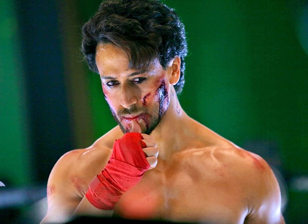
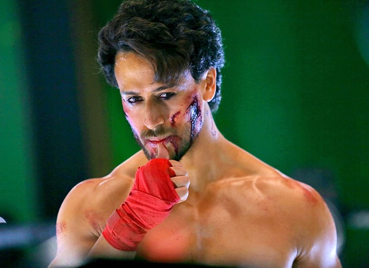

Why train with us?
Awarded Number#1 Boxing Club in London
Professional mentors
Affiliated with UFC
Open 24/7
Why Training is Important
 

Boxing training is crucial for several reasons:
- Physical Fitness: Boxing workouts incorporate various exercises like shadowboxing, jumping rope, and hitting the heavy bag, which improve cardiovascular health, strength, agility, and endurance.
- Skill Development: Boxing is a technical sport that requires mastering various techniques such as footwork, punching, blocking, and defense. Training helps develop these skills through repetition and practice.
- Self-Defense: Learning boxing techniques can provide valuable self-defense skills. Knowing how to throw a punch properly and defend against attacks can help individuals protect themselves in dangerous situations.
- Mental Discipline: Boxing training demands focus, concentration, and mental toughness. It teaches discipline, perseverance, and the ability to push through physical and mental barriers, which are valuable traits both inside and outside the ring.
- Stress Relief: Boxing workouts can serve as a powerful stress reliever. The intense physical activity releases endorphins, which are natural mood lifters, helping to reduce stress and improve overall mental well-being.
- Confidence Building: As one gains proficiency in boxing, their confidence naturally grows. Knowing that you can defend yourself and having the physical and mental strength to face challenges can significantly boost self-esteem.
- Social Interaction: Boxing training often takes place in a gym environment where you'll interact with coaches and fellow boxers. This social aspect can provide a sense of community and support, enhancing the overall training experience.
Overall, boxing training offers a holistic approach to fitness and personal development, combining physical exercise with mental discipline and skill acquisition.